과거의 운영체제는 프로그램이 실행되려면 반드시 프로그램 전체(바이너리 코드, 데이터 등 전체 블록)가 물리 메모리에 올라가 있어야 한다고 생각했습니다. 하지만 실제 프로그램 코드를 분석해보면 우리가 사용하는 코드는 오류 처리 루틴이거나 특수 상황 메뉴인 경우가 많아 한 번도 실행되지 않는 코드가 용량의 대부분을 차지합니다.
따라서 램(RAM)에는 당장 필요한 핵심만 올려두고(마치 거대한 메모리가 있는 것처럼 환상을 주고), 나머지 거대한 파츠는 디스크의 SWAP 영역(가상 메모리)에 보관하는 것이 가상 메모리의 원리입니다.

프로그램이 시작될 때 파일 전체를 스왑(Swap)하지 않고, CPU가 특정 페이지를 요구할 때만 가져오는 방식을 요구 페이징(Demand Paging) 혹은 지연 적재(Lazy Swapper)라고 부릅니다.
그렇다면 CPU가 자기가 참조한 페이지가 “지금 진짜 RAM에 있는지, 아니면 디스크 가상 메모리에 있는지” 어떻게 알 수 있을까요? 바로 페이지 테이블에 숨겨진 Valid-Invalid Bit(유효-무효 비트)를 통해 판별합니다.

Invalid(i) 라면, 메모리에 없다는 뜻이므로 OS를 향해 예외 인터럽트, 즉 페이지 부재(Page Fault) 트랩을 발생시킵니다.Valid(v) 상태로 갱신한 뒤, 아까 중단되었던 CPU 명령을 다시 재시작합니다.[!WARNING] 페이지 부재(Page Fault)가 발생하면 디스크 I/O를 기다려야 하므로 성능이 기하급수적으로 느려집니다. 따라서 Page Fault 비율을 낮추는 것이 가상 메모리 관리의 핵심입니다.
만약 빈 프레임이 아예 없다면 어떻게 될까요? OS는 기존 메모리에 자리 잡고 있는 페이지 중 하나를 골라 디스크로 강제 퇴출(Swap-Out)시켜 자리를 만들어야 합니다. 이때 쫓겨나는 페이지를 희생 프레임(Victim Frame)이라고 합니다.
희생자를 누구로 고를지 결정하는 로직이 바로 페이지 교체 알고리즘입니다.
상식적으로 생각할 때 프로세스에게 빈 프레임(메모리 공간)을 더 많이 주면 페이지 부재(Page Fault) 확률이 줄어들어야 합니다. 하지만 FIFO 알고리즘은 프레임을 더 주더라도 타이밍이 꼬이면서 오히려 오류율이 비정상적으로 치솟는 경우가 발생합니다.
이 모순 현상은 최적 알고리즘(OPT)이나 LRU에서는 나타나지 않는 FIFO 고유의 결함입니다. 따라서 현대 운영체제는 절대 순수 FIFO 알고리즘을 사용하지 않습니다.
CPU 사용률을 높이기 위해 메모리에 프로세스들을 계속 올리다(다중 프로그래밍의 정도 증가) 보면, 어느 순간 각 프로세스에 할당되는 프레임 숫자가 극단적으로 줄어듭니다.
프로세스들이 자신의 작업을 하기 위한 최소한의 프레임조차 확보하지 못해 끝없이 Page Fault가 연속해서 일어납니다. OS는 하염없이 Swap In/Swap Out 만을 반복하고, 정작 CPU는 할 일이 없어져(I/O 대기) 놀게 되는 참사가 발생하는데, 이를 스래싱(Thrashing)이라고 합니다.
스래싱을 예방하기 위해선 프로세스의 지역성(Locality) 개념을 이해해야 합니다. 프로세스는 특정 시간 동안 특정 구역(루프문, 변수 집합 등)의 페이지만 집중적으로 참조하는 경향이 있습니다.
현재 특정 시간 창($\Delta$) 동안 집중적으로 참조된 페이지 집합을 묶어 작업 집합(Working Set)으로 정의합니다. 만약 OS가 가지고 있는 남은 프레임 개수가 이 WSS(작업 집합의 크기)의 총합보다 못 미친다면 무리해서 새로운 프로세스를 적재하지 않습니다. 대신 프로세스 하나를 통째로 정지(Suspend/Swap Out)시켜 프레임을 회수한 뒤 스래싱의 임계점을 넘지 않도록 관리합니다.
작업 집합 모델이 추상적인 방식이라면, PFF는 매우 직접적인 방식입니다. 단순히 전체적인 Page Fault 비율을 실시간으로 모니터링하다가 상한선을 넘으면 프레임을 더 주고, 하한선 밑으로 떨어지면 남는 프레임을 뺏어오는(회수) 동적 할당 방식입니다.